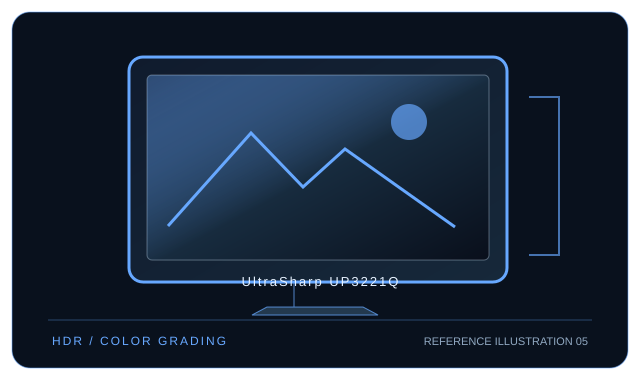

[ INDIVIDUAL COMPONENT // DISPLAYS ]
Dell UltraSharp UP3221Q
31.5-inch mini-LED 4K reference LCD with an integrated Calman colorimeter and Thunderbolt 3.

IDENTIFICATION: Dell model UltraSharp UP3221Q. Confirm the full rear-label model, region and hardware revision; published capabilities can differ by firmware, input board and bundle.
Specifications
| Catalog subcategory | Professional displays |
|---|---|
| Exact model / panel | 31.5-inch IPS LCD with mini-LED full-array local dimming |
| Native resolution | 3840 × 2160 (UHD 4K, 16:9) |
| Refresh rate | Up to 60 Hz at native resolution |
| Color gamut | 99.8% DCI-P3 (CIE 1976); factory-calibrated color modes include Adobe RGB and sRGB. |
| Calibration features | Integrated Calman Powered colorimeter supports on-demand/scheduled hardware calibration and two user calibration slots (CAL 1/CAL 2); includes factory report. |
| Inputs / companion ports | DisplayPort 1.4, HDMI 2.0 × 2, Thunderbolt 3 USB-C upstream (up to 90 W), downstream Thunderbolt 3 (up to 15 W), USB hub and audio out. |
| VESA / mounting | 100 × 100 mm VESA mount. |
| Power | AC 100–240 V; typical 100 W, maximum 345 W under maximum load; Thunderbolt host power delivery up to 90 W. |
Compatibility and deployment
Use DP 1.4, HDMI 2.0 or Thunderbolt 3 USB-C video; the Thunderbolt host connection supports charging and daisy-chain workflows. 4K/60, HDR and local-dimming operation depend on host GPU, OS and link capability. The built-in colorimeter performs monitor-side calibration; consult the model guide for supported workflow and conditions.
Preservation notes
Record the complete rear-label SKU, serial/date code, installed firmware and options, calibration report, supported signal timing, tested source and cable, mounting hardware, regional AC rating and image condition. Keep the original hood/stand and model-specific setup documentation with the display; use trained service personnel for internal work.
Manufacturer documentation and references
- Dell — UltraSharp UP3221Q product detailsManufacturer product or specification reference for model identification and published capabilities.
- Dell — UP3221Q manuals and documentationManufacturer support, user guide or product-specific documentation.